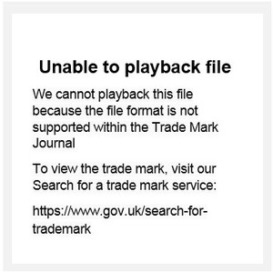

Trade Mark Journal No.2026/009 27 February 2026
WO0000001870039 (7,9,10,11,12,20,28,37,42,44,45)
Office of origin: Germany
Date of International Registration:27 December 2024
Date of designation in the UK:
27 December 2024

Sound Mark
International priority date claimed: 10 December 2024
(Germany)
- Class 7
- Motors, electric, other than for land vehicles, starters (other than for land vehicles), generators, ignition systems for internal combustion engines, glow plugs, sparking- plugs, igniting distributors, ignition coils, magnetos, spark plug connectors, injection pumps, fuel pumps, speed governors, injectors for engines and nozzle carriers; valves for machines; fuel filters, oil filters, air filters; hydraulic pumps, hydraulic motors, hydraulic valves, hydraulic cylinders, hydraulic filters; pneumatic valves, power steering, air brakes, pneumatic devices, namely pneumatic compressors, compressed air reservoirs, control valves, brake valves (all as parts of machines or engines); turbocompressors; resistance welding installations, servo drives and gear spindles, robot controllers; modular parts for assembly and manufacturing machines in the field of automatic engineering, including hydraulic equipment, namely work tables [parts of machines] and work benches [parts of machines], mounting plates for machines, safety couplings for machines, swivels [hydraulic couplings], lifting devices, table presses, material lifting and handling systems, namely assembly lines and conveying chains, vibrating conveyors, tilt mechanisms, replacement parts [control mechanisms] for conveying and handling machines for transporting ceramic materials, including grabs and swan-neck robots; burring machines (mechanical, thermal and electrochemical); packing machines; electric power tools and plug-in tools therefor; electric kitchen machines, and accessories therefor; dishwashers, washing apparatus, high frequency motor spindles; igniting devices for internal combustion engines; parts and accessories for the abovementioned products insofar as they are contained in this class; power drills and bores, power saws, belt sanders [machines], belt sanding machines, wax-polishing (machines and apparatus for -), electric, drills [power tools], bolt cutters [machines], diamond cutting tools for machines, machines for tapping threads, floor edgers, electric wax-polishing machines for industrial purposes, tile cutters [electric], scissors, electric, polishing tools (electric -), electric planers, electrical cutting apparatus, paint stripping apparatus [machines]; files [power-operated tools]; tile cutters [machines], tile saws [power tools], milling-drilling machines, milling cutters [machine tool], milling tools [machines], milling machines; chopping machines, wood planing machines, wood grinding machines, log splitters [machines]; tapping machines, routers [machines], routers [parts for machines], disc sanding machines; electric shears, motors and engines (except for land vehicles); agricultural implements, other than hand-operated; machine coupling and transmission components (except for land vehicles); electricity generators used with solar collectors.
- Class 9
- Electric and electronic measuring, checking (supervision) and control apparatus for installing in motor vehicles; apparatus for the recording, processing, sending, receiving and display of signals, data, images and sounds, electric and electromagnetic data carriers; video cameras, monitors, loudspeakers, antennas for radios and television receivers, telephones, car aerials, portable radiotelephones, car telephones; alarm systems; locating and navigation equipment for installation in land, air and water vehicles; electric power units, electric filters, semi-conductor components, optoelectronic components; printed circuits, etched switches, sealed switches, integrated circuits, relays, fuses, cables for electric, electronic and optical signals, cable couplings, switches, electric, electronic light range adjusters, sensors, detectors, induction devices, namely induction voltage regulators, switch boxes, solar cells; analysis apparatus for automobiles, namely analysis of exhaust gases, soot particles, brake function, diagnostic instruments and simulation devices, test apparatus for engines and motors, workshop test instruments for injection pumps, starter motors and generators; parts and accessories for the aforementioned goods; computer hardware and software for reading and transmitting data from electric measuring devices; apparatus for recording, transmission or reproduction of sound or images; batteries (accumulators), battery chargers, battery testers, amplifiers, transformers, extension cable reels; fuel cells for installation in motor vehicles; fuel cells for stationary applications; lambda probes; electronic control apparatus for manufacturing engineering; programmable controllers; accumulators for electric bicycles, chargers for electric bicycles; restraint systems for installation in motor vehicles, namely sensors.
- Class 10
- Apparatus for use in medical analysis for blood samples taken from patients with the aid of artificial intelligence, integrating with a networked platform; medical devices and apparatus, and systems consisting thereof, for telemedical applications; diagnostic apparatus for medical purposes; testing apparatus for medical purposes; apparatus and instruments for medical use; cartridges for holding liquids for medical testing purposes.
- Class 11
- Heating, cooking, grilling, warming and refrigerating apparatus; gas lighters, included in this class; headlamps and lights, including for vehicles; refrigerating apparatus and machines; ventilating installations; hair dryers; electric coffee brewers; roasters; bakers' ovens; electric egg cookers; toasters; air-conditioning installations; irrigation sprinklers; clothes dryers; windscreen defrosting systems; parts and fittings for the aforesaid goods in this class.
- Class 12
- Restraints for fitting in motor vehicles, namely belt tighteners, airbags; servo brakes and air brakes for land and air vehicles, antilock brake systems; traction control systems; gearing for land vehicles; vehicle dynamics control systems; windshield wipers; parts and accessories for the abovementioned goods, included in this class; motors, electric, for land vehicles; parts and fittings for the aforesaid goods, all included in this class; electric bicycles, parts for electric bicycles.
- Class 20
- Furniture, and in particular kitchen and bathroom furniture, washstands; mirrored cabinets; hydraulic reservoirs; parts and fittings for the aforesaid goods all included in class 20.
- Class 28
- Games and playthings; gymnastic and sporting articles not included in other classes.
- Class 37
- Installation, maintenance and repair of parts and accessories of motor vehicles, car radio systems, radio telephones, power hand tools, workshop appliances and devices, power generators, of household and kitchen appliances, radio and television systems, sanitary devices, heating and air-conditioning systems and furniture; maintenance and repair of motor vehicles during motor sport events; servicing and maintenance of fuel cells for stationary applications.
- Class 42
- Building and construction planning, and consultancy relating thereto; creation and installation of programs for data processing; conducting development initiatives, testing and research; technological consultancy and preparation of reports relating to technical research; technological consultancy and preparation of reports relating to technological research; planning, development and technical testing of space projects; design and development of computer hardware and software; engineering services, in relation to the following fields, energy consultancy; development, programming and implementation of software for providing of access to platforms and portals on the Internet.
- Class 44
- Medical services; telemedicine for the evaluation of transmitted patient data for the assessment of the state of health of the patients.
- Class 45
- Monitoring of computer systems for security guarding of buildings and facilities.
Robert Bosch GmbH
Representative: Taylor Wessing LLP, 5 New Street Square London EC4A 3TW UNITED KINGDOM